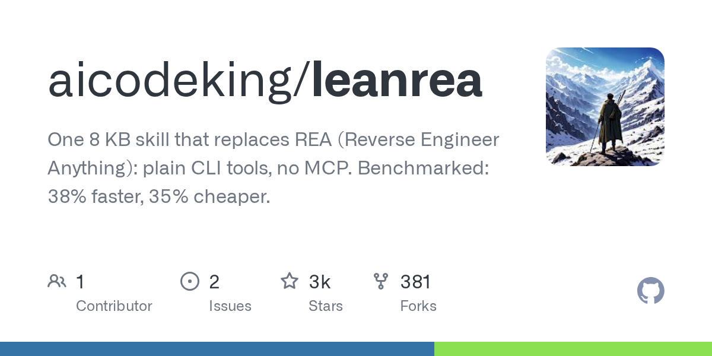
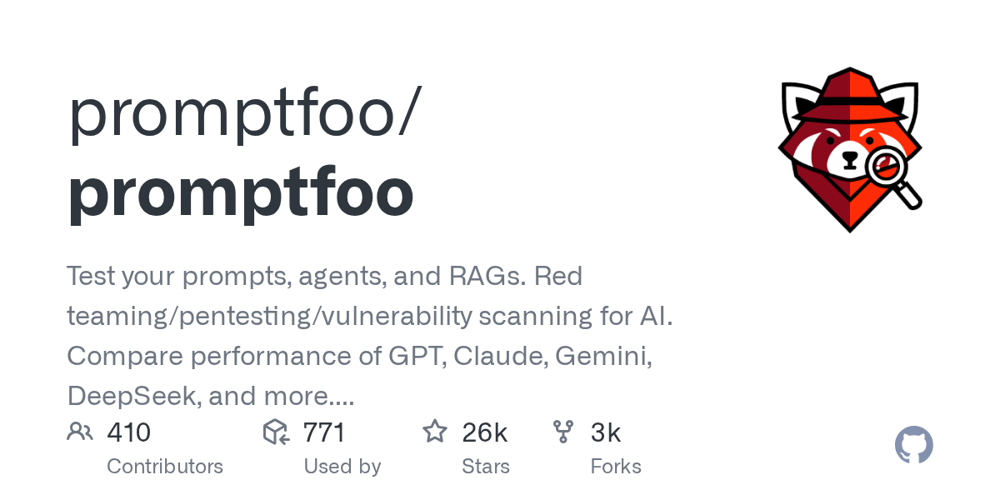
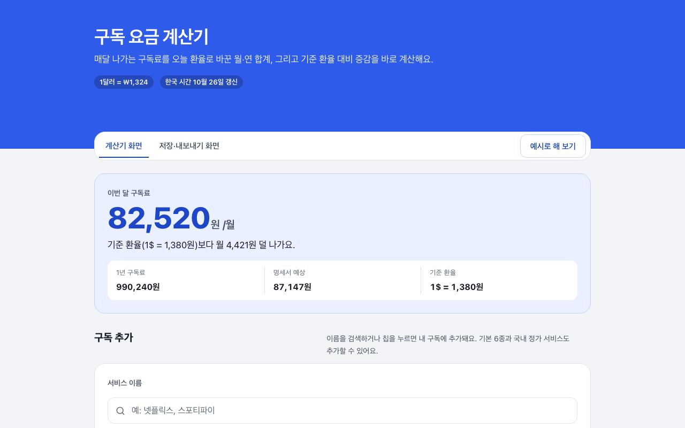

하루 한 모금,
오늘의 기술 소식
화제가 된 오픈소스와 AI 도구를 직접 받아서 돌려 보고, 1분 쇼츠와 글로 남깁니다. 모든 숫자에는 원문 근거를 답니다.

8KB 파일 하나로 에이전트에 역공학 스킬을 심었다 — 설치 없이 받아서 돌려 본 기록
앱·바이너리를 분석(역공학)하게 하는 에이전트 스킬이다. MCP 서버나 207개 도구 없이 8KB짜리 안내 파일 한 장만으로 "어떤 원시 명령을 쓰면 가장 빠른지"를 알려 준다. 설치 없이, 인터넷도 쓰지 않고 직접 받아서 확인해 봤다.
글 읽기 →최근 글
전체 보기 →로컬 Qwen 27B를 5개 협업시켜 코딩 대회 문제 돌려 봤다
같은 로컬 AI를 5개 인스턴스로 나눠 문제를 풀면 혼자 풀 때보다 정답률이 오른다는 프로젝트 GVS5H를 받아서, 설치 없이 인터넷도 끊은 채로 살펴본 뒤 이 맥에서 직접 돌려 본 기록이다.

promptfoo, 설치 없이 받아서 직접 돌려 봤다
LLM 프롬프트 평가·보안 테스트 도구 promptfoo(별 26,383개, MIT)를 받아 봤습니다. 설치는 못 해서 코드를 읽고, 핵심만 다시 만들어 돌려 본 기록입니다.
NVIDIA 오픈쉘, 설치 없이 코드부터 읽어본 결과
OpenShell은 자율 AI 에이전트를 격리해서 돌리는 런타임이다. 정책으로 에이전트의 파일·네트워크·시스템 접근을 제어한다. 다만 macOS의 격리는 아직 실험 단계이고, Docker가 없어 직접 돌려보지는 못했다.
freehire 실측 기록 — Go로 만든 IT 채용 오픈소스, 설치 없이 받아서 돌려 봤다
회사 ATS(채용 관리 시스템)에서 IT 공고를 직접 긁어오는 오픈소스 채용 검색 도구 freehire를 받아, 인터넷 없이 돌릴 수 있는 부분만 실행해 본 기록이다.
같은 27B 모델을 세 프로그램으로 돌려서 속도 2.4배 차이를 본 기록
Mac 한 대에 같은 27B 모델을 세 가지 실행 프로그램으로 띄우고 똑같은 질문을 보냈다. 답을 쓰는 속도는 가장 빠른 Splash가 나머지 두 프로그램의 약 2.4배였다.
앱 실험실
앱 13개 전체 보기 →
구독 요금 계산기
오늘의 달러-원 환율과 비트코인·이더리움 시세로 Netflix·ChatGPT Plus 등 해외 구독 6종의 원화 월액·연액과 기준 환율(7일 평균) 대비 증감액을 즉시 계산합니다.
앱 써 보기 →25개 모델
맥에서 직접 잰 로컬 AI
내 맥에서 어떤 AI 모델이 돌아갈까? 48GB 맥에서 인기 로컬 모델 25개를 직접 돌려 답 쓰는 속도·메모리·한국어 점수·도구 호출·코딩을 쟀습니다. 같은 기준으로 비교할 수 있게 정리했어요.
실측표 보기 →커밋 한 모금
기술 소식. 오늘 뜨는 오픈소스·AI 모델을 1분 안에. 원문 화면과 직접 돌려 본 결과까지.
영상 보기 →실험 한입
생활 실험. 궁금한 걸 AI 3개한테 물어보고, 정답은 공개 데이터로 직접 계산해 확인합니다.
영상 보기 →